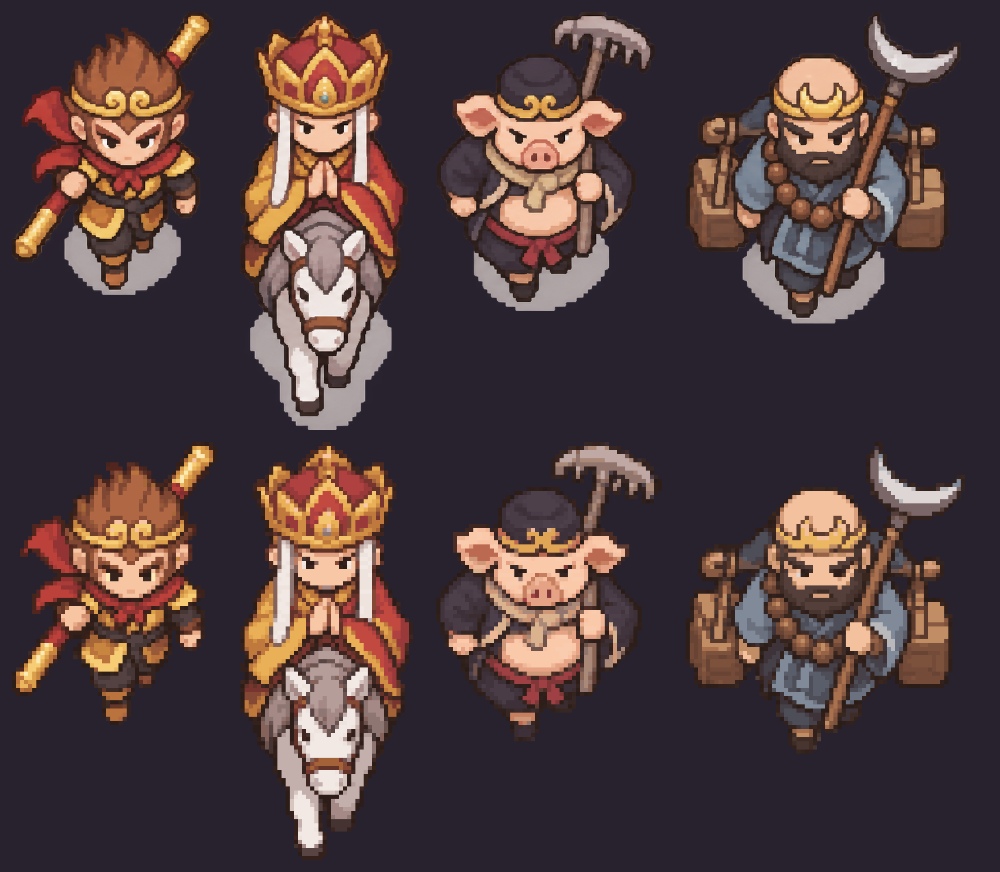
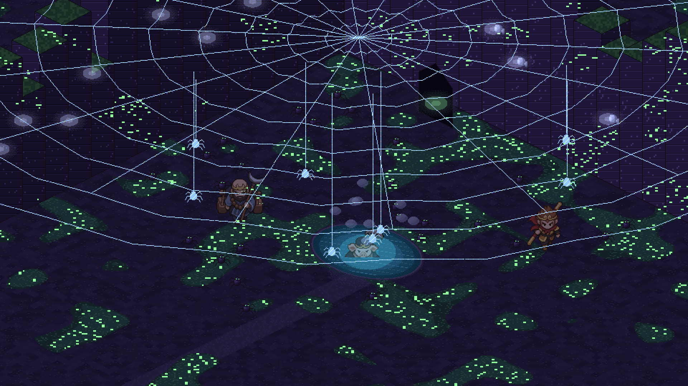
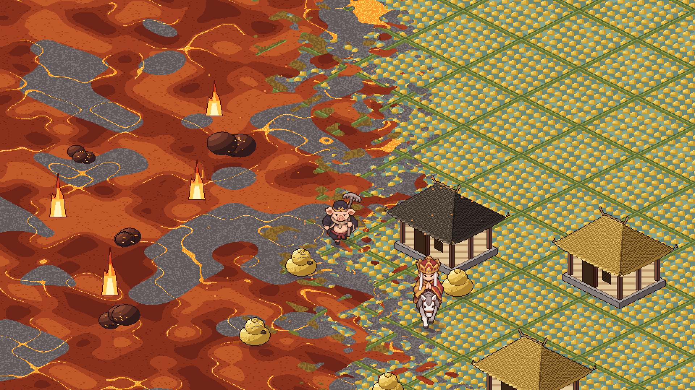

Tây Du Ký — Huyền Thoại Sống · art pilot v2
v2: bốn thầy trò được dò từng pixel từ ảnh topdown của chủ dự án và làm sạch (lưới gốc, viền đậm liền, không còn pixel mờ). Cảnh dựng lại ở cùng mật độ pixel (ô 64 × 32 px, nhân vật cao khoảng 70 px). Mây vẽ theo mẫu cloud.jpg. Nhà tranh đứng trên nền đá. Ảnh phóng to theo bội số nguyên, không làm mờ.
Bước 1 · Bốn thầy trò (dò từ ảnh topdown)
Ngộ Không, Bát Giới, Sa Tăng, Tam Tạng cưỡi ngựa trắng. Nền sáng và nền tối, phóng 5×.

So sánh: ảnh tham khảo (trên) và bản dò (dưới).

Bước 2 · Góc Thiên Cung
Nam Thiên Môn mái cong hai tầng, bảng tên, sàn ngọc nổi trên biển mây, mây cumulus và dải sương theo mẫu, cây đào tiên, lò Bát Quái, Ngộ Không bên cây đào.

Bước 3 · Hẻm Bàn Tơ Động · ngày / hoàng hôn / đêm
Vòm mạng nhện có sương đọng, nhện khắp nơi, trứng nhện và rêu phát sáng ban đêm. Bát Giới nhảy xuống suối (như trong truyện), Ngộ Không và Sa Tăng đứng ngoài.


Bước 4 · Ranh giới Hỏa Diệm Sơn ↔ Cao Lão Trang · ngày / hoàng hôn
Tro trôi lên ruộng lúa vàng, ruộng cháy sém, nhà tranh bị sém mái ngay ranh giới, đống rơm dính tro. Bát Giới ở mép lửa, Tam Tạng trên bờ ruộng.
